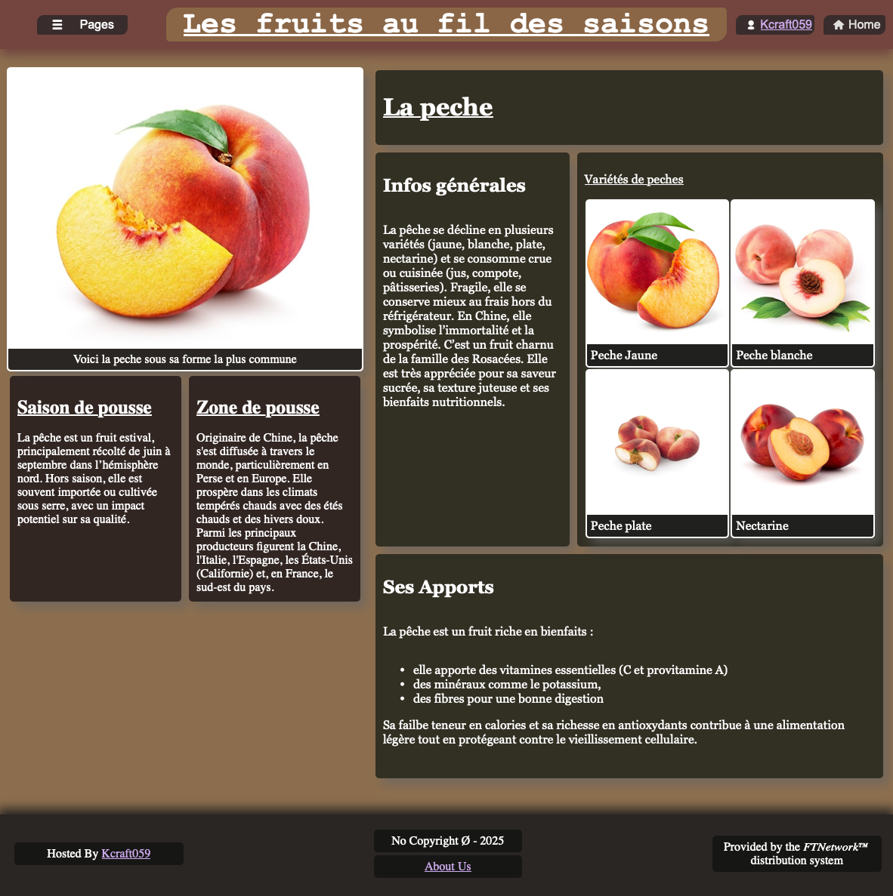

Information Importante:
Ce site est encore grandement à l'état de projet, l'interface n'est pas utilisable sous mobile et des bugs sont présents.
Des mises à jours sont prévues pour plus de compatibilité.
Bienvenue sur notre site !
Comment ca marche ?
Chaque fruit répertorié sur le site a sa page spécifique. Elle se présenteras globalement toujours de la meme manière avec les infos essentielles tel que:
- Des infos générales
- Ses apports
- Sa zone de pousse
- Sa saison de pousse

Les pages se présentent sous cette forme
Notre Démarche
C'est dans l'optique d'une meilleure alimentation que l'idée ce ce site nous est venue, notre objectif est simple:
Nous souhaitons que les gens puissent s'informer rapidement, sur les fruits, leur saison de récolte, etc…
Ainsi nous avons développé ce site et l'avons basé sur des informations sures et vérifées pour fournir des informations de qualité a nos utilisateurs.
Faq :
Y'aura t'il une évolution du site ?
Oui le site est encore un début de projet qui voit le jours et nous serions trés heureux d'étendre notre liste de fruits.
L'interface évoluera t'elle ?
Peut-être, Peut-être pas… cela dépends de la motivation des équipe du groupe, pour le moment notre objectif est plus focalisé sur les informations du site.
Pourquoi n'y a t'il pas de sélecteur de période de pousse ?
La raison est assez simple: manque de temps, de budget et de connaissances. Nous avons eu une période rush dans l'obejctif de livrer un site fonctionnel, nous avons du prioriser certains aspects du site.
Voir la FAQ complète